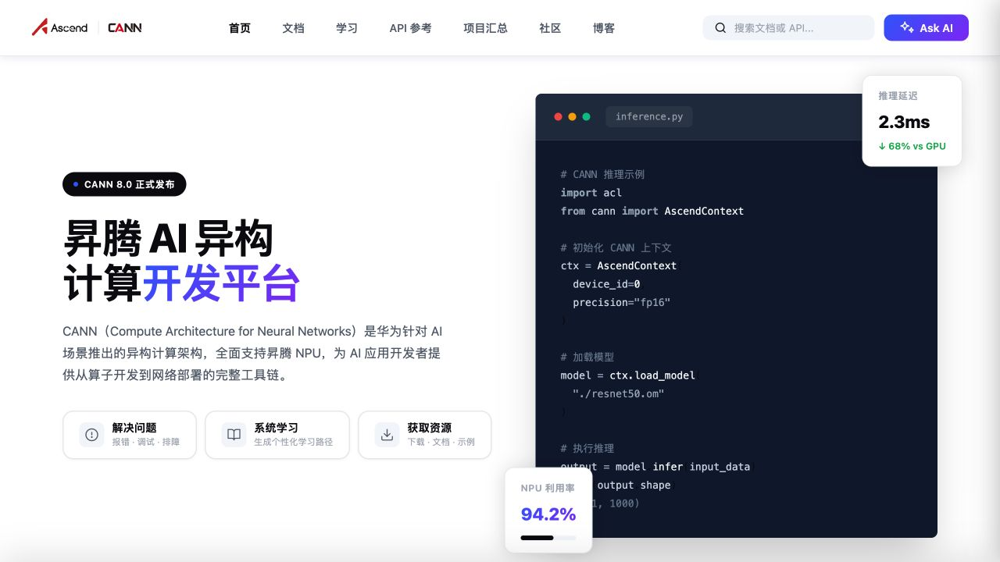
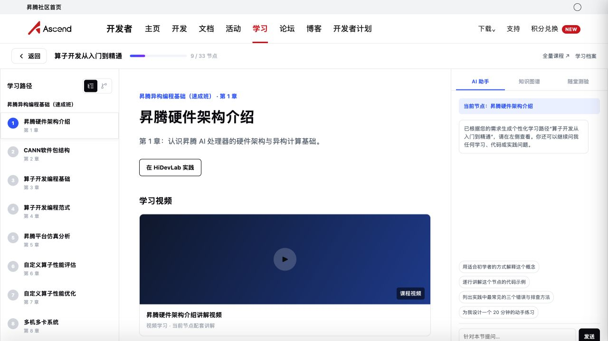
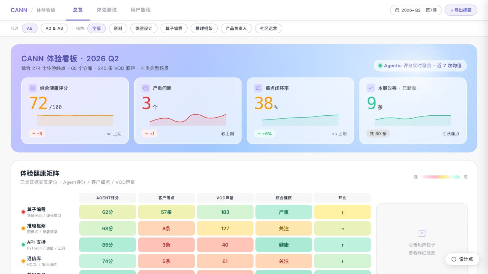
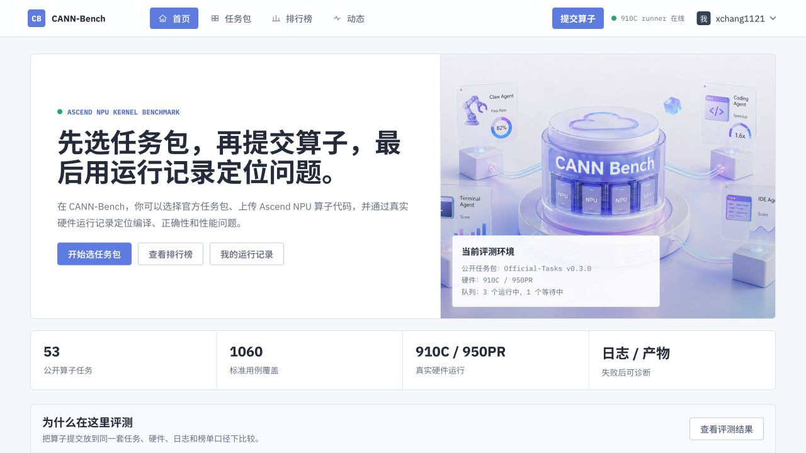
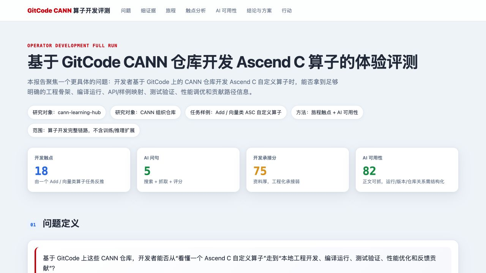
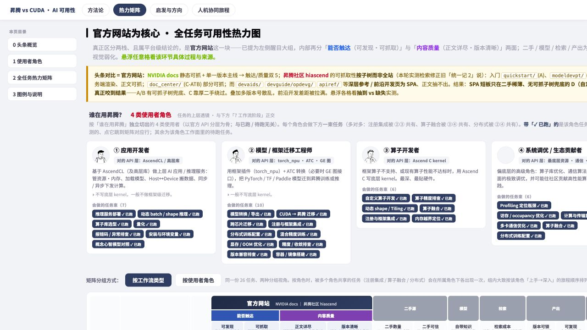
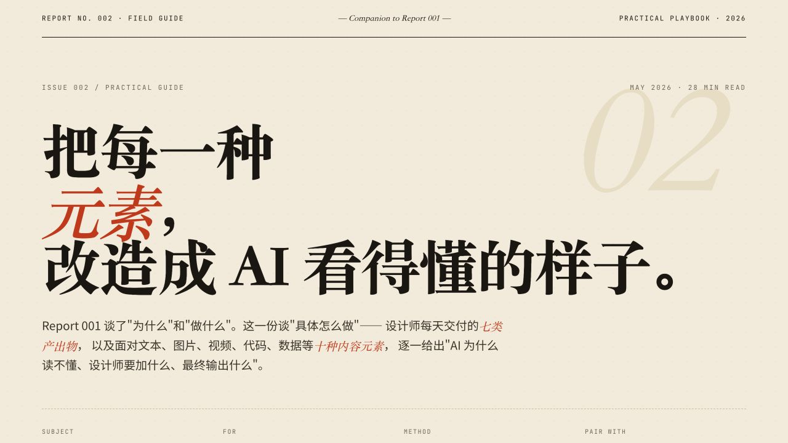

FEATURED · 开发平台
↗ 打开平台首页CANN 开发平台概念站
把文档、学习路径、API 查询和 AI 助手收敛为一个统一入口，探索开发者在 CANN 生态中的主工作台。

精选页面
10 项
可交互Ascend C 编程样板路径
从课程章节、实践到知识图谱的学习体验样板。

数据看板CANN 体验运营看板
汇聚体验健康、用户痛点、Agent 评测与 VOC 的主看板。

产品原型CANN-Bench
面向任务套件、评测结果和排行榜的基准产品原型。

研究报告GitCode CANN 算子开发体验
围绕算子开发路径与 AI 可用性的体验研究。

交互分析全任务可用性热力图
按任务逐格浏览可用性证据，定位开发流程的体验断点。

设计手册AI 时代社区设计实操手册
围绕内容被 AI 发现和使用的社区设计方法。
旅程研究
人机协同旅程
一次自定义算子开发中的人机协同时序与工程拆解。
评分矩阵
组件体验测试
聚焦组件与用户触点的体验评分矩阵。
文档体验
CANN 文档中心
面向开发者的信息架构与文档浏览原型。
综合洞察
昇腾社区可用性综合分析
汇总社区体验、开发任务和改进方向的综合报告。